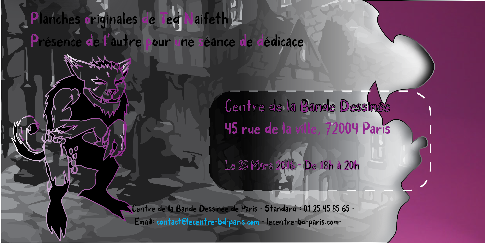

Première expérience avec Illustrator
Lors de ma première année en étude visuelle, multimédia et arts numériques, nous avons entamer l'apprentissage de Illustrator, un logicile de création graphique vectorielle. Notre chargé de TD nous as tout d'abord expliquer ce qu'était ce logiciel et rapidement nous sommes passés à la pratique. Afin de comprendre certains principes notre apprentissage est passé par la méthode "dur", celle de l'utilisation du pathfinder.
Mais avant de passer au pathfinder, il nous as fallut apprendre à manier la plume sur Illustrator. Sous la supervision de notre chargé de TD, un dessin à été imposé, Mr Hug. Il a fallut reproduire le dessin avec l'outil plume avant de réaliser le pathfinder. Cette méthode permet en effet d'éviter la superposition de couleur lors de l'impression, elle n'est pas souvent utilisé mais chez certains imprimeur c'est nécessaire. En voici le résultat ci-dessous.

Un pas vers la professionnalisation
Une fois la réalisation de Mr Hug terminé, le commencement de la carte d'invitation
a pu démarrer. Pour la première fois, un projet à visé professionnel nous a été proposé.
Il m'a été possible d'entrevoir un morceau du monde du travail qui est assez dificile
à apercevoir au sein de la formation d'études visuelles.
Il a été possible de se mettre dans la peau d'un graphiste, en ayant la demande d'une
carte d'invitation ainsi que des contraintes de type : respecté le style de l'auteur
etc. L'auteur choisi par la chargé de TD à été Ted Naifeh pour réaliser une invitation
au vernissage de l'exposition du Centre de la Bande Dessiné de Paris et il fallait
mettre en avant la série de comic à travers la carte tout en ayant une typographie qui
convienne au minimum.
On peut dire que ça a été une expérience enrichissante dans la mesure où il a été
possible de cotoyer les "difficultés" auxquelles on peut être sujet dans le monde du
graphisme.
A travers ce projet j'ai pu tester un style graphique tout à fait différent du miens
et j'ai pu élargir mon champs de connaissance et de pratique des logiciles de création
graphique.
